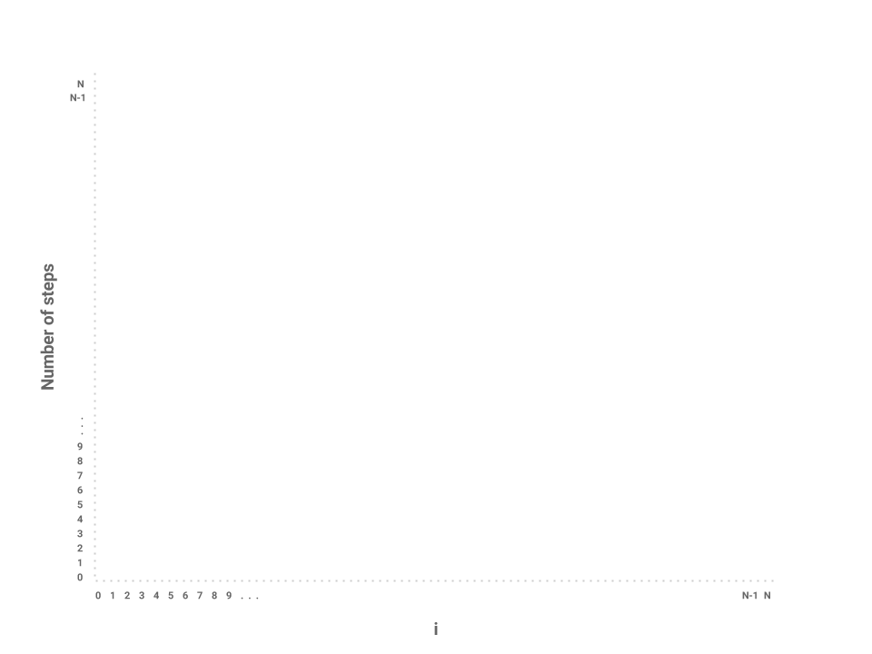
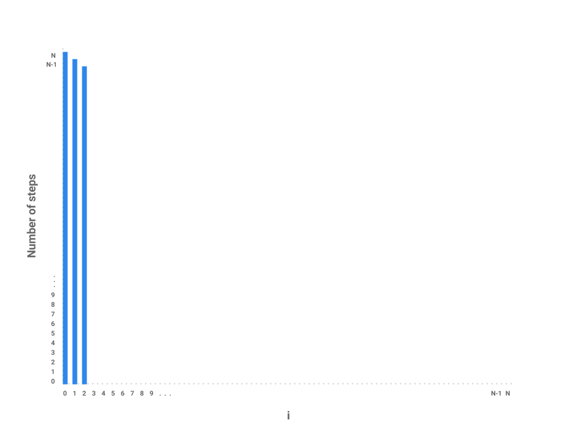
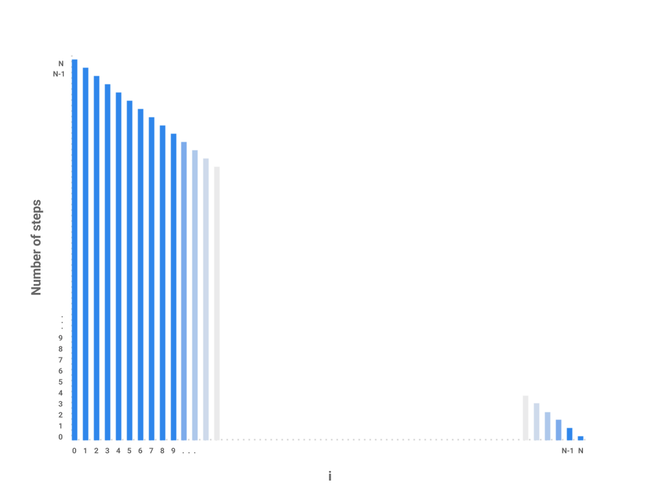
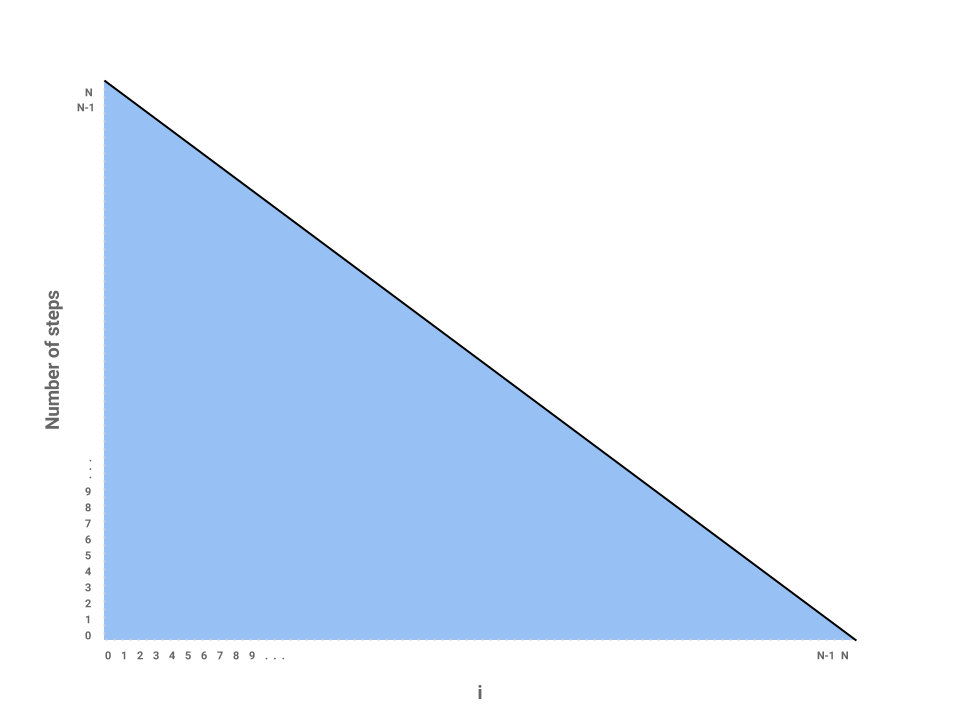
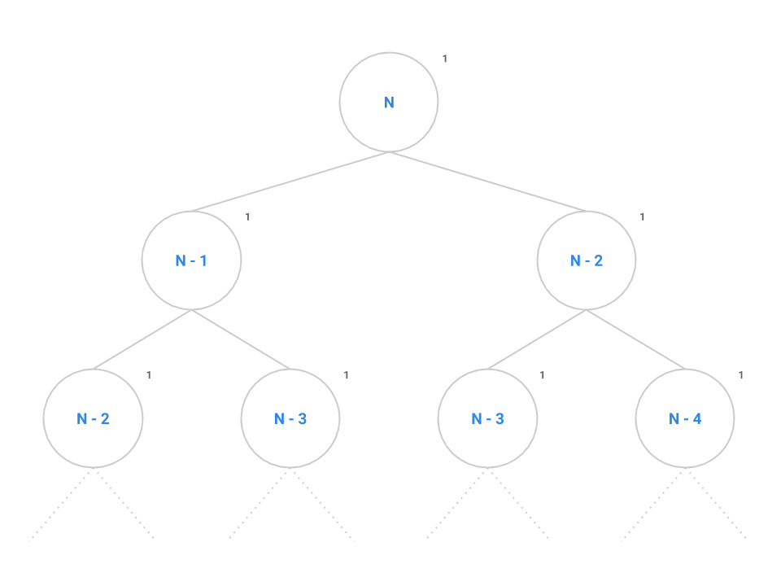
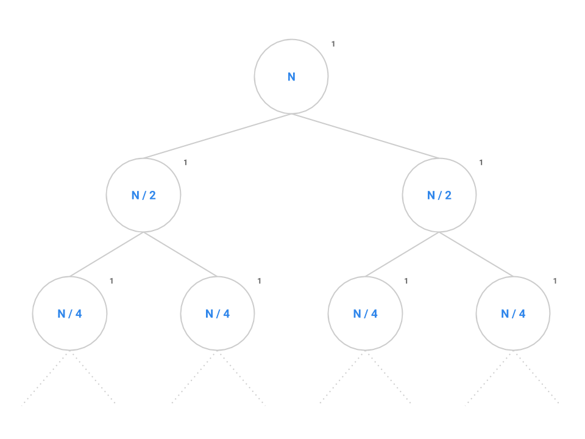

Navigation
- Intro
- Estimating Efficiency by Timing Functions
- Abbreviated Estimates
- Modeling Runtime Analysis
- Practice
- Conclusion
A. Intro
Pull the files for lab 7 from the skeleton.
git fetch shared
git merge shared/lab7 -m "Start lab7"
git pushLearning Goals
In this lab, we consider ways of measuring the efficiency of a given code segment. Given a function f, we want to find out how fast that function runs. One way of doing this is to take out a stopwatch and measuring exactly how much time it takes for f to run on some input. We will look at some plots of runtime to understand how some functions' runtimes change with the size of their input. However, we will also see that there are problems with using elapsed time for this purpose.
Then, we will learn how to develop better models for analyzing runtime complexity. Often times, the programs we need to analyze are too complex to solve using basic counting rules so we need some way of organizing information and reducing the complexity of the problem. In this last section, we will learn how we can break complex algorithms down into smaller pieces that we can then individually analyze.
B. Estimating Efficiency by Timing Functions
Algorithms
An algorithm is an abstract notion that describes an approach for solving a problem. The code we write in this class, our programs, are implementations of algorithms.
For example, consider the problem of sorting a list of numbers. One algorithm we might use to solve this problem is called bubble sort. Bubble sort tells us we can sort a list by repeatedly looping through the list and swapping adjacent items if they are out of order, until the entire sorting is complete.
Another algorithm we might use to solve this problem is called insertion sort. Insertion sort says to sort a list by repeatedly looping through our list, removing the minimum element, and putting it into a new list in the correct order.
Several websites like VisuAlgo, Sorting.at, Sorting Algorithms, and USF have developed some animations that can help us visualize these sorting algorithms. Spend a little time playing around with these demos to get an understanding of how much time it takes for bubble sort or insertion sort to completely sort a list. We'll revisit sorting in more detail later in this course, but for now, try to get a feeling of how long each algorithm takes to sort a list. How many comparison does each sort need? And how many swaps?
Since each comparison and each swap takes time, we want to know which is the faster algorithm: bubble sort or insertion sort? And how fast can we make our Java programs that implement them?
Time Estimates
To start, it seems that the most reasonable way to estimate the time an algorithm takes is to measure the time directly. Each computer has an internal clock that keeps track of time, usually in the number of fractions of a second that have elapsed since a given base date. The Java method that accesses the clock is System.nanoTime(). A timing.Timer class is provided in timing.Timer.java.
Before we start, find out
- exactly what value
System.nanoTime()returns, and - how to use the
timing.Timerclass to measure the time taken by a given segment of code.
Exercise: Measuring Some Sorting Functions
The file timing.Sorter.java contains multiple implementations of various sorting algorithms, including the bubble sort and insertion sort algorithms mentioned earlier.
Its getRandomArray method returns an array of the specified size filled with randomly generated values.
The file timing.GraphSorters contains some code to generate a plot of the run-times of different sorting implementations, sorting different sizes of arrays.
Its main method accepts three arguments (or sets them by default) corresponding to the number of different array sizes it should test (ntrials),
the interval by which it should increase the array size between trials (by), and the number of times it should repeat each size array per sorting implementation
(nrepeats). By default, the minimum size array is 5.
For example, the commands
javac timing/GraphSorters.java
java timing.GraphSorters 100 50 10uses the command-line arguments to plot all sorters' runtimes for 100 trials, each increasing by 50 elements, and repeating each trial 10 times (and averaging the result).
Try running the program, either with IntelliJ or over the command line. To run with IntelliJ, you can simply run the main method of GraphSorters and alter the ntrials, by, and nrepeats values. If you're running it on the command line, run the above commands from the lab7 directory.
Play with the values of ntrials, by, and nrepeats to see how the graphs change!
Discussion: Timing Results
How fast is timing.Sorter.java? As you can see, this answer clearly depends on the sorting algorithm, as well as the size of the array.
Is one sorting algorithm always faster than another? Does increasing the array size always mean the sorting takes longer?
How does changing nrepeats change the plot?
Is your plot the exact same as your neighbors plot, even with the same values of ntrials, by, and nrepeats?
Look at the source code for timing.BubbleSorter to timing.WipingBubbleSorter. After looking at the plots, can you intuitively explain why
timing.WipingBubbleSorter is usually 2x as fast as timing.BubbleSorter?
(Hint: Consider the immobility of some elements when the swapping passes are single directional (i.e. only going forward), and how this "Wiping" strategy helps deal with that issue.)
While timing how long a program runs is certainly useful, it doesn't give us a reliable answer - there are too many variables.
You do not need to submit the answers to these questions, but it's important to think about them, try to answer them, and explain why. Talk to your neighbors or ask a TA/AI if you have questions!
C. Abbreviated Estimates
Estimation with Proportional To
Instead of timing how long a program segment takes, we can say that a program segment runs in time proportional to a given expression, where that expression is in simplest possible terms. Here, proportional to means within a constant multiple of.
Thus $2N + 3$ is "proportional to $N$" since it's approximately $2 \times N$. Likewise, $3N^{5} + 19N^{4} + 35$ is "proportional to $N^{5}$" since it's approximately $3 \times N^{5}$. As $N$ approaches infinity, the approximation better models the function's real runtime.
Basically, what we're doing here is discarding all but the most significant (fastest growing) term of the estimate and also discarding any constant factor of that term. In a later section, we can show exactly why this holds with a more formal notation.
Asymptotic Analysis with Big-Theta
A notation often used to provide even more concise estimates is big-Theta, represented by the symbol $\Theta$. Say we have two functions $f(n)$ and $g(n)$ that take in non-negative integers and return real values. We could say
$f(n) \in \Theta(g(n))$
(where $a \in b$ is read as $a \text{ is in } b$)
if and only if $f(n)$ is proportional to $g(n)$ as $n$ approaches infinity.
Why do we say "in" $\Theta$? You can think of $\Theta(g(n))$ as a set of functions that all grow proportional to $g$. When we claim that $f$ is in this set, we are claiming that $f$ is a function that grows proportional to $g$.
There are analogous notations called big-Oh ($Ο$) and big-Omega ($\Omega$), where big-Oh is used for upper-bounding and big-Omega is used for lower-bounding. If $f(n)$ is in $O(g(n))$, it means $f$ is in a set of functions that are upper-bounded by $g$, as in they grow at most as quickly as $g$. Likewise, if $f(n)$ is in $\Omega(g(n))$, it means $f$ is in a set of functions that are lower-bounded by $g$, as in they grow at least as quickly as $g$.
Formal Definition of Big-Oh
In this section, we provide a more formal, mathematical definition of big-Oh notation. These are two equivalent definitions of the statement $f(n) \text{ is in } O(g(n))$:
- There exist positive constants M and N such that for all values of $n > N$, $f(n) < M \times g(n)$. Example: Given $f(n) = n^{2}$ and $g(n) = n^{3}$, is $f(n) \text{ in } O(g(n))$? Is $g(n) \text{ in } O(f(n))$? We can choose $M = 1$ and $N = 1$. We know that for all $n > 1$, $n^{2} < 1 \times n^{3}$. Therefore, $f(n) \text{ is in } O(g(n))$. However, it is impossible to find positive integers $M$ and $N$ such that $n^{3} < M \times n^{2}$ for all $n > N$. Notice that to satisfy the inequality $n^{3} < M \times n^{2}$, $n$ must be less than $M$. But since $M$ a constant, $n^{3} < M \times n^{2}$ does not hold for arbitrarily large values of $n$.
$f(n) \in O(g(n)) \Longleftrightarrow \lim\limits_{n \to \infty} \frac{f(n)}{g(n)} < \infty$
This means, essentially, that for very large values of $n$, $f$ is not a lot bigger than $g$.
Example: Given $f(n) = n^{5}$ and $g(n) = 5^{n}$, is $f(n) \text{ in } O(g(n))$? Is $g(n) \text{ in } O(f(n))$?
After repeatedly applying L'Hôpital's rule, we see that $f(n) \text{ is in } O(g(n))$:
$$\lim\limits_{n \to \infty} \frac{f(n)}{g(n)} = \lim\limits_{n \to \infty} \frac{n^{5}}{5^{n}} = \lim\limits_{n \to \infty} \frac{5n^{4}}{5^{n} \log 5} = \cdots = \lim\limits_{n \to \infty} \frac{5!}{5^{n} \log^5 5} = 0$$
However, $g(n)$ is not in $O(f(n))$:
$$\lim\limits_{n \to \infty} \frac{g(n)}{f(n)} = \lim\limits_{n \to \infty} \frac{5^{n}}{n^{5}} = \lim\limits_{n \to \infty} \frac{5^{n} \log 5}{5n^{4}} = \cdots = \lim\limits_{n \to \infty} \frac{5^{n} \log 5}{5!} = \infty$$
Formal Definitions of big-Omega and big-Theta
There are a few different ways to define big-Omega and big-Theta.
big-Omega:
$$f(n) \in \Omega(g(n)) \Longleftrightarrow g(n) \in O(f(n)) \Longleftrightarrow \lim\limits_{n \to \infty} \frac{f(n)}{g(n)} > 0$$
big-Theta:
$$f(n) \in \Theta(g(n)) \Longleftrightarrow f(n) \in O(g(n)) \text{ AND } g(n) \in O(f(n)) \\ \Longleftrightarrow \lim\limits_{n \to \infty} \frac{f(n)}{g(n)} = c \\ \text{ for some constant } 0 < c < \infty$$
Orders of Growth are Proportional to a Given Variable
Unfortunately, students are sometimes careless about specifying the quantity on which an estimate depends. Don't just use $N$ without making clear what $N$ means. This distinction is important especially when we begin to touch on sorting later in the course. It may not always be clear what $N$ means.
Commonly-Occurring Orders of Growth
Here are some commonly-occurring estimates listed from no growth at all to fastest growth.
- constant time or proportional to $1$, or any constant number $c$
- logarithmic time or proportional to $\log N$
- linear time or proportional to $N$
- quadratic/polynomial time or proportional to $N^{2}$ or $N^k$ for a constant $k$, respectively
- exponential time or proportional to $k^{N}$ for a constant $k$
- factorial time or proportional to $N!$
Logarithmic Algorithms
We will shortly encounter algorithms that run in time proportional to $\log N$ for some suitably defined $N$. Recall from algebra that the base-10 logarithm of a value is the exponent to which 10 must be raised to produce the value. It is usually abbreviated as $\log_{10}$. Thus
- $\log_{10} 1000$ is 3 because $10^{3} = 1000$
- $\log_{10} 90$ is slightly less than 2 because $10^{2} = 100$
- $\log_{10} 1$ is 0 because $10^{0} = 1$
In algorithms, we commonly deal with the base-2 logarithm, written as $\lg$, defined similarly.
- $\lg 1024$ is 10 because $2^{10} = 1024$
- $\lg 9$ is slightly more than 3 because $2^{3} = 8$
- $\lg 1$ is 0 because $2^{0} = 1$
Another way to think of log is the following: $\log_{\text{base}} N$ is the number of times $N$ must be divided by $base$ before it hits 1. For the purposes of determining orders of growth, however, the log base actually doesn't make a difference because, by the change of base formula, we know that any logarithm of $N$ is within a constant factor of any other logarithm of $N$. We usually express a logarithmic algorithm as simply $\log N$ as a result.
Algorithms for which the running time is logarithmic are those where processing discards a large proportion of values in each iterations. For example, let's consider a guessing game where we are trying to guess a secret number that a person is thinking of within a certain range (i.e. 1 to 1024), and this person will tell us if our current guess is higher or lower than secret number. We can use binary search in order to guess a number that a person is thinking - specifically, we would guess a number in the middle of the current valid range, and then remove half the options that we know won't be correct (i.e. if we were told higher, we can limit our range to the upper half), and do this to completion. In each iteration, this algorithm discards half the possible values for the secret number, repeatedly dividing the size of the problem by 2 until there is only one value left, as illustrated by the table below.
| Round # | Numbers left |
|---|---|
| 1 | 1024 |
| 2 | 512 |
| 3 | 256 |
| 4 | 128 |
| 5 | 64 |
| 6 | 32 |
| 7 | 16 |
| 8 | 8 |
| 9 | 4 |
| 10 | 2 |
| 11 | 1 |
We know from above that $\lg 1024 = 10$ which gives us an approximation of how many rounds it will take.
We will see further applications of logarithmic behavior when we work with trees in subsequent activities.
D. Modeling Runtime Analysis
A Graphical Approach to Analyzing Iteration
We've thus far defined the language of asymptotic analysis and developed some simple methods based on counting the total number of steps. However, the kind of problems we want to solve are often too complex to think of just in terms of number iterations times however much work is done per iteration.
Consider the following function, repeatedSum.
long repeatedSum(int[] values) {
int N = values.length;
long sum = 0;
for (int i = 0; i < N; i++) {
for (int j = i; j < N; j++) {
sum += values[j];
}
}
return sum;
}In repeatedSum, we're given an array of values of length N. We want to take the repeated sum over the array as defined by the following sequence of j's.
$0, 1, 2, 3, \cdots, N - 1$
$1, 2, 3, 4, \cdots, N - 1$
$2, 3, 4, 5, \cdots, N - 1$
Notice that each time, the number of elements, or the iterations of j, being added is reduced by 1. While in the first iteration, we sum over all $N$ elements, in the second iteration, we only sum over $N - 1$ elements. On the next iteration, even fewer: just $N - 2$ elements. This pattern continues until the outer loop's counting variable, i, has incremented all the way to $N$.
One possible approach to this problem is to draw a bar graph to visualize how much work is being done for each iteration of i. We can represent this by plotting the values of i across the X-axis of the graph and the number of steps for each corresponding value of i across the Y-axis of the graph.

Now, let's plot the amount of work being done on the first iteration of i where i = 0. If we examine this iteration alone, we just need to measure the amount of work done by the j loop. In this case, the j loop does work proportional to $N$ steps as the loop starts at 0, increments by 1, and only terminates when j = N.
How about the next iteration of i? The loop starts at 1 now instead of 0 but still terminates at $N$. In this case, the j loop is proportional to $N - 1$ steps. The next loop, then, is proportional to $N - 2$ steps.

We can start to see a pattern forming. As i increases by 1, the amount of work done on each corresponding j loop decreases by 1. As i approaches $N$, the number of steps in the j loop approaches 0. In the final iteration, i = N-1, the j loop performs work proportional to 1 step.

We've now roughly measured each loop proportional to some number of steps. Each independent bar represents the amount of work any one iteration of i will perform. The runtime of the entire function repeatedSum then is the sum of all the bars, or simply the area underneath the line.

The problem is now reduced to finding the area of a triangle with a base of $N$ and height of also $N$, giving us an area of $\frac{N * N}{2} = \frac{N^{2}}{2} \in \Theta(N^{2})$. Thus, the runtime of repeatedSum is in $\Theta(N^{2})$.
We can verify this result mathematically by noticing that the sequence can be described by the following summation:
$1 + 2 + 3 + ... + N = \frac{N(N + 1)}{2}$ or, roughly, $\frac{N^{2}}{2}$ which is in $\Theta(N^{2})$. It's useful to know both the formula as well as its derivation through the graph above.
Tree Recursion
Now that we've learned how to use a bar graph to represent the runtime of an iterative function, let's try the technique out on a recursive function, mitosis.
int mitosis(int N) {
if (N == 1) {
return 1;
}
return mitosis(N / 2) + mitosis(N / 2);
}Let's start by trying to map each $N$ over the x-axis like we did before and try to see how much work is done for each call to the function. The conditional contributes a constant amount of work to each call. But notice that in our return statement, we make two recursive calls to mitosis. How do we represent the runtime for these calls? We know that each call to mitosis does a constant amount of work evaluating the conditional base case but it's much more difficult to model exactly how much work each recursive call will do. While a bar graph is a very useful way of representing the runtime of iterative functions, it's not always the right tool for recursive functions.
Instead, let's try another strategy: drawing call trees. Like the graphical approach we used for iteration earlier, the call tree will reduce the complexity of the problem and allow us to find the overall runtime of the program on large values of $N$ by taking the tree recursion out of the problem. Consider the call tree for fib below.
int fib(int N) {
if (N <= 1) {
return 1;
}
return fib(n - 1) + fib(n - 2);
}
At the root of the tree, we make our first call to fib(n). The recursive calls to fib(n - 1) and fib(n - 2) are modeled as the two children of the root node. We say that this tree has a branching factor of two as each node contains two children. It takes a constant number of instructions to evaluate the conditional, addition operator, and the return statement as denoted by the 1.
We can see this pattern occurs for all nodes in the tree: each node performs the same constant number of operations if we don't consider recursive calls. If we can come up with a scheme to count all the nodes, then we can simply multiply by the constant number of operations to find the overall runtime of fib.
Remember that the number of nodes in a tree is calculated as the branching factor, $k$, raised to the height of the tree, $h$, or $k^{h}$. Spend a little time thinking about the maximum height of this tree: when does the base case tell us the tree recursion will stop?
Self-test: Choosing the Right Notation
Together, we are going to identify the asymptotic runtime complexity of fib(N).
Try 1: $\Theta(N^{2})$
- This is incorrect. Each instance of
fibmakes two recursive calls tofibagain. This continues for N levels.
- This is incorrect. Each instance of
Try 2: $O(N^{2})$
- Again incorrect for the same reason - each instance of
fibmakes two recursive calls tofibagain. This continues for N levels.
- Again incorrect for the same reason - each instance of
Try 3: $\Theta(2^{N})$
- While incorrect, the intuition is right. It's important to notice that, while each call to
fibmakes two more recursive calls tofib, the recursive calls are not equal as one callsfib(N - 1)while the other callsfib(N - 2). The left side of the tree will do significantly more work than the right side of the tree to the point where the runtime is no longer exactly within $\Theta(2^{N})$.
- While incorrect, the intuition is right. It's important to notice that, while each call to
Try 4: $O(2^{N})$
- Correct! There's a small but significant difference between big-Oh and big-Theta in this problem as the runtime for
fibis not exactly $\Theta(2^{N})$ as given by the tight bound, theta. The call tree is actually imbalanced as the left edge contains $N$ nodes but the right edge contains only $N/2$ nodes. We describe this runtime more exactly as $\Theta(1.618^{N})$ which is within $O(2^{N})$ but not within $\Theta(2^{N})$.
- Correct! There's a small but significant difference between big-Oh and big-Theta in this problem as the runtime for
Now, back to mitosis. The problem is setup just like fib except instead of decrementing $N$ by 1 or 2, we now divide $N$ in half each time. Each node performs a constant amount of work but also makes two recursive calls to mitosis(N / 2).

Like before, we want to identify both the branching factor and the height of the tree. In this case, the branching factor is 2 like before. Recall that the series $N, N/2, \cdots , 4, 2, 1$ contains $\log_{2} N$ elements since, if we start at $N$ and break the problem down in half each time, it will take us approximately $\log_{2} N$ steps to completely reduce down to 1.
Plugging into the formula, we get $2^{\log_{2} N}$ nodes which simplifies to $N$. Therefore, $N$ nodes performing a constant amount of work each will give us an overall runtime in $\Theta(N)$.
In general, for a recursion tree, we can think of the total work as $\sum_{\text{layers}} \frac{\text{nodes}}{\text{layer} }\frac{\text{work}}{\text{node}}$ For mitosis, we have $\lg N$ layers, $2^i$ nodes in layer $i$, with $1$ (constant) work per node. Thus we see the summation $\sum_{i = 0}^{\lg N} 2^i (1)$, which is exactly the quantity we just calculated.
E. Practice
Exercise: Complete quiz.RuntimeQuiz.java
Look in quiz.RuntimeQuiz.java, where we have provided one example and some more common method types for you to analyze the run-time of in asymptotic notation. Fill out the missing fields to correctly match the runtime to the method.
Asymptotic analysis is the primary overarching way we look at efficiency, determining how fast a method is, before we look at the constant factors in a method. Throughout the rest of the class, you should expect to see analysis of each data structure's runtime in asymptotic notation.
Tag and submit this lab as for an ordinary assignment. The autograder will be running frequently during the lab, so that within a minute or two you should be able to see how you did by consulting the lab7 entry in the Scores tab.
F. Conclusion
Summary
In this section, we learned about two different techniques for analyzing the runtime of program.
- First, we tried to estimate the runtime efficiency of a program by timing it. But we found that the results weren't always the same between different computers or even running at different times.
Second, we learned how to estimate the efficiency of an algorithm using proportionality and orders of growth.
- big-Oh describes an upper bound for an algorithm's runtime.
- big-Omega describes a lower bound for an algorithm's runtime.
- big-Theta describes a tight bound for an algorithm's runtime.
In the final section, we applied what we learned about estimation and orders of growth to model algorithmic analysis for larger problems. Two techniques, graphs and call trees, helped us break down challenging problems into smaller pieces that we could analyze individually.
Practical Tips
- Before attempting to calculate a function's runtime, first try to understand what the function does.
- Try some small sample inputs to get a better intuition of what the function's runtime is like. What is the function doing with the input? How does the runtime change as the input size increases? Can you spot any 'gotchas' in the code that might invalidate our findings for larger inputs?
- Try to lower bound and upper bound the function runtime given what you know about how the function works. This is a good sanity check for your later observations.
- If the function is recursive, draw a call tree to map out the recursive calls. This breaks the problem down into smaller parts that we can analyze individually. Once each part of the tree has been analyzed, we can then reassemble all the parts to determine the overall runtime of the function.
- If the function has a complicated loop, draw a bar graph to map out how much work the body of the loop executes for each iteration.
Useful Formulas
- $1 + 2 + 3 + 4 + \cdots + N \text{ is in } \Theta(N^{2})$
- There are $N$ terms in the sequence $1, 2, 3, 4, \cdots, N$
- $1 + 2 + 4 + 8 + \cdots + N \text{ is in } \Theta(N)$
- There are $\lg N$ terms in the sequence $1, 2, 4, 8, \cdots, N$
- The number of nodes in a tree, $N$, is equal to $k^{h}$ where $k$ is the branching factor and $h$ is the height of the tree
- All logarithms are proportional to each other by the Change of Base formula so we can express them generally as just $\log$.
It's worth spending a little time proving each of these to yourself with a visual model!
Deliverables
A quick recap of what you need to do to finish today's lab:
- Look through the timing.Timer class and look at the resulting graphs from timing the algorithms in timing.Sorter.java for different inputs. Answer the exploratory discussion questions. There is nothing to turn in for this part.
- Read through the content on asymptotic analysis (big-theta, O, and omega) focusing on how to handle logarithmic, iterative, and recursive algorithms.
- Complete the exercises in quiz.RuntimeQuiz.java and make sure they pass the autograder tests.